BLORIQ · Light & Dark
같은 규칙, 같은 색의 의미. 테마별 명도와 표면을 조정하고 클리어 순간의 흐름을 강화했습니다.
390×844 Flutter widget renderer 캡처 · 영어 UI · 실제 Android 기기 캡처가 아닙니다. 캡처용 Unicode 글꼴을 사용했습니다. 연출 이미지는 서로 다른 시점의 정지 화면입니다.
개선 전 → 개선 후
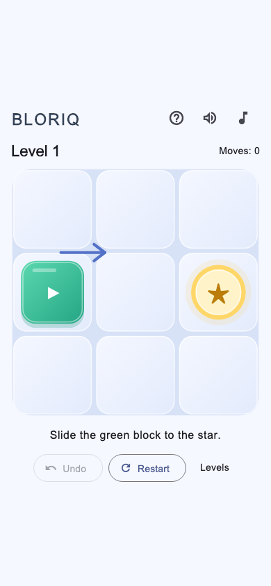
Before · 기존 Light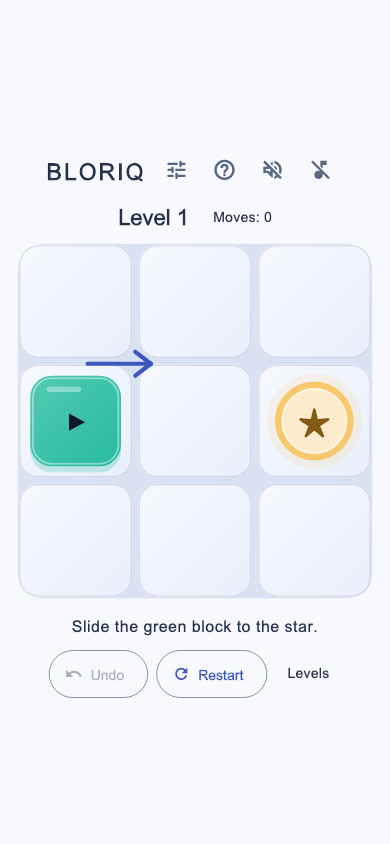
After · Light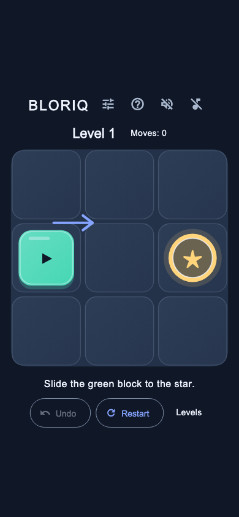
After · DarkStage 2 · Echo 생성
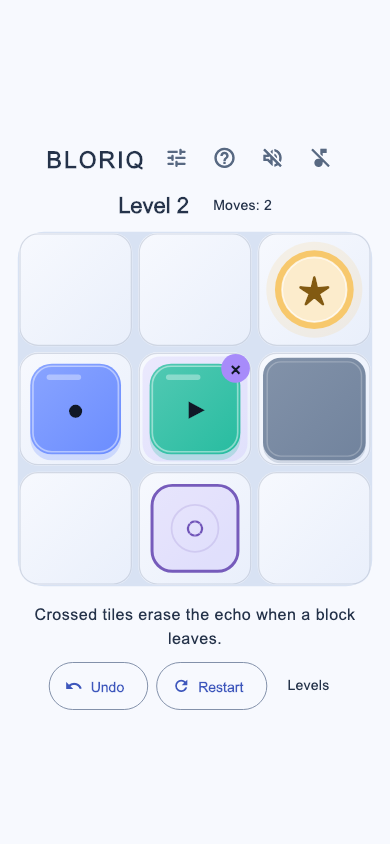
Light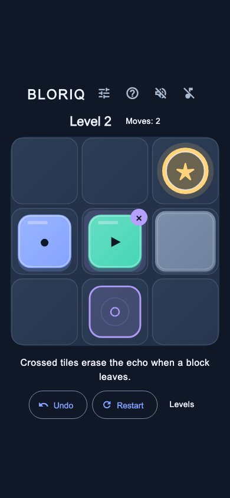
DarkStage 14 · Switch/Gate
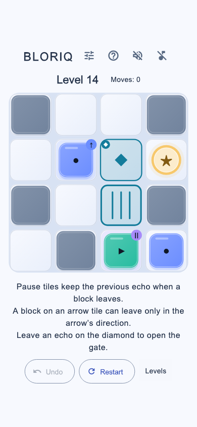
Light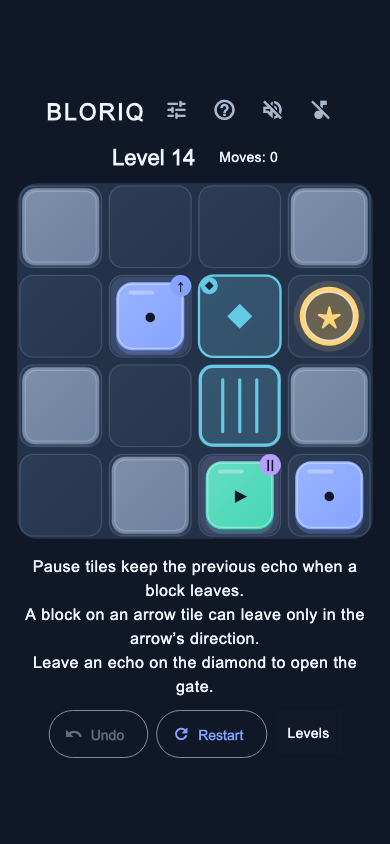
DarkStage 14 · 열린 Gate
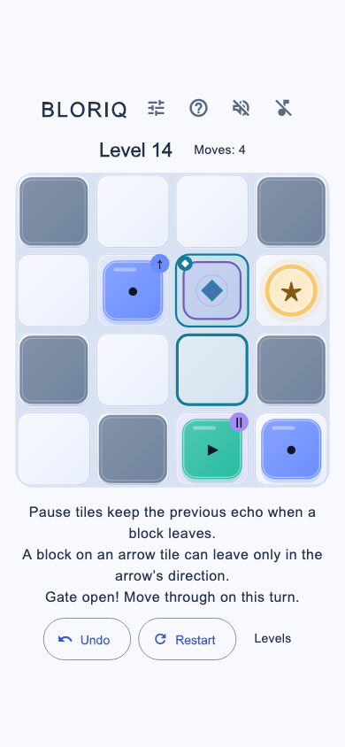
Light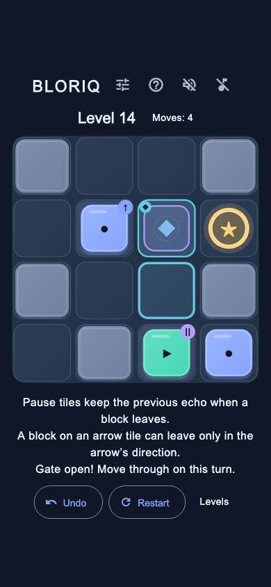
DarkStage 20 · 후반 퍼즐
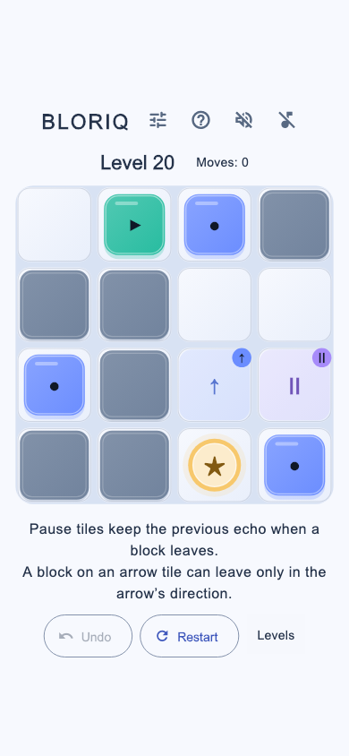
Light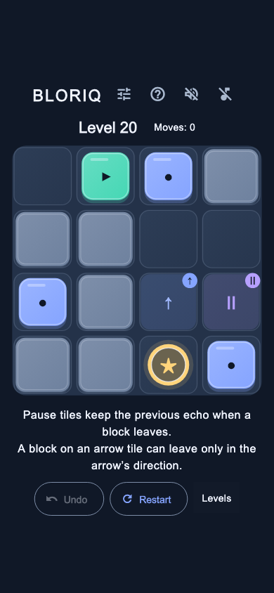
DarkEscape · 목표 블록 확대
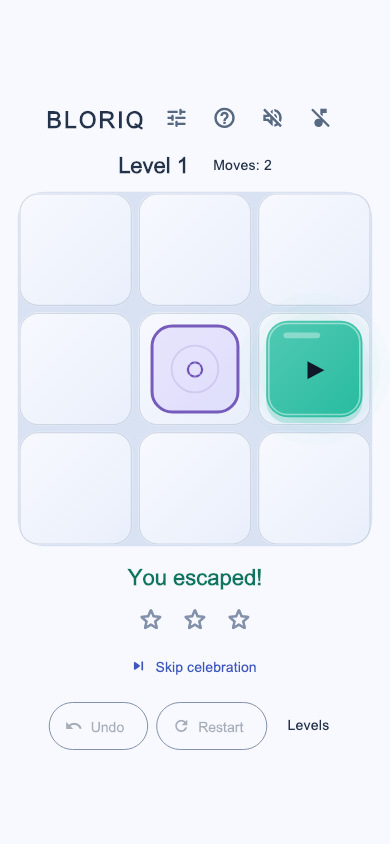
Light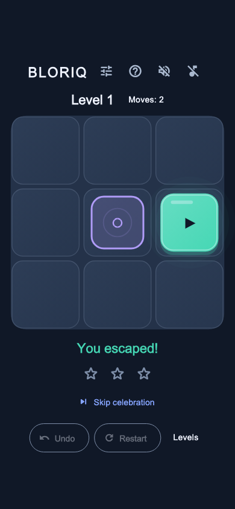
DarkEcho Burst · 민트/보라 파티클
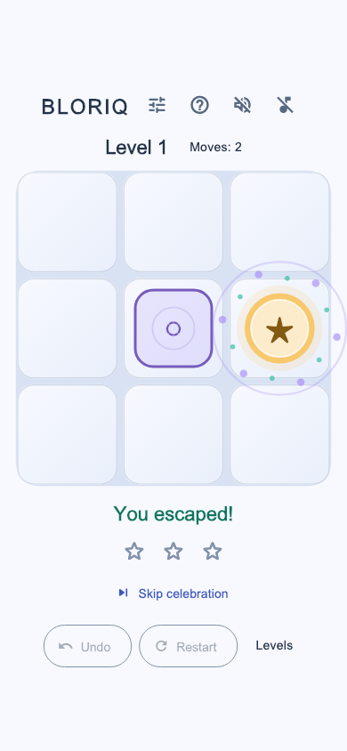
Light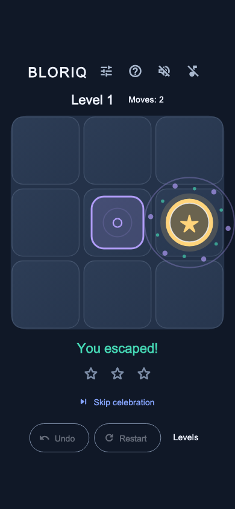
DarkStar Reveal · 순차 별 표시
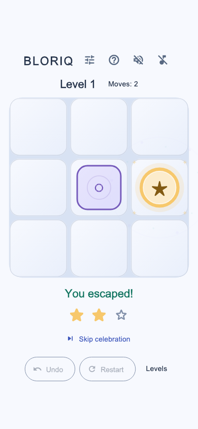
Light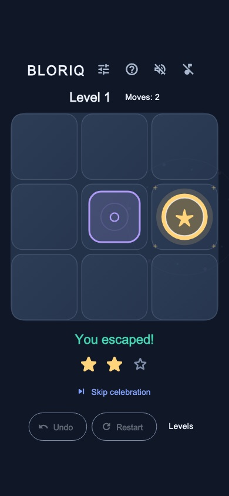
DarkCompletion · 새 최고 기록
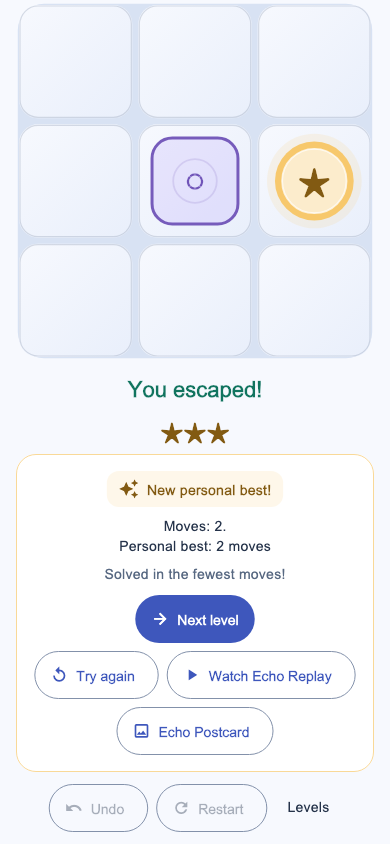
Light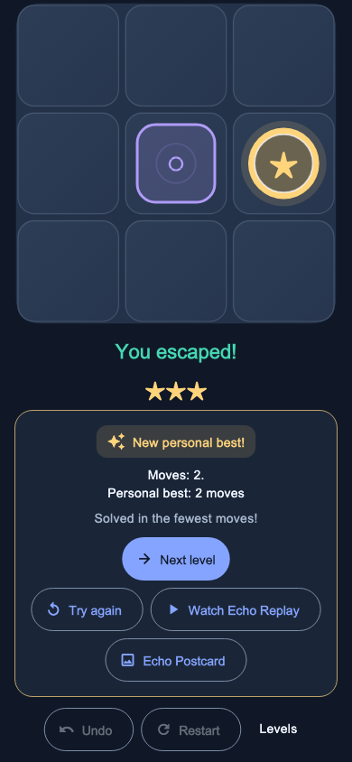
DarkCompletion · 동일 기록 재도전
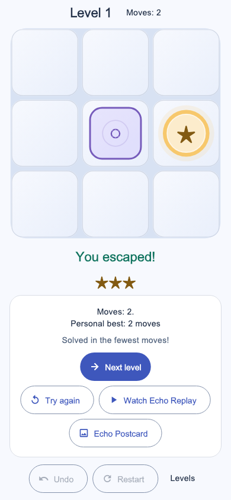
Light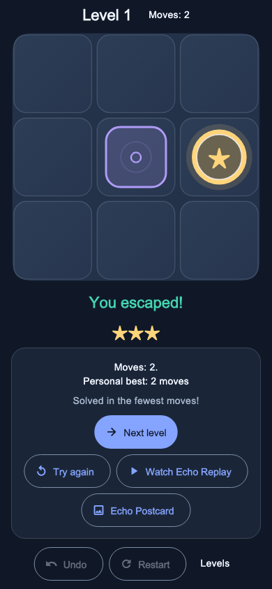
Dark설정 · Light/Dark/System
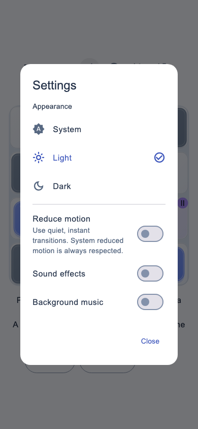
Light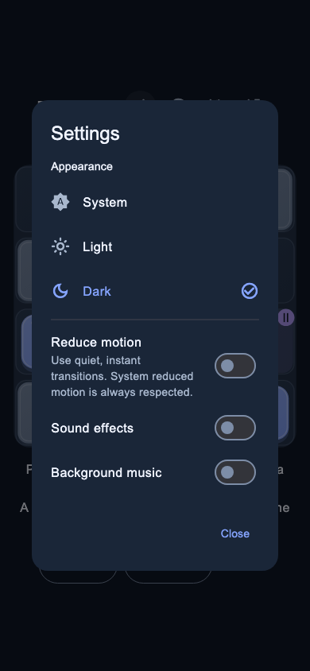
Dark도움말
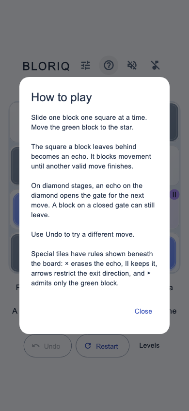
Light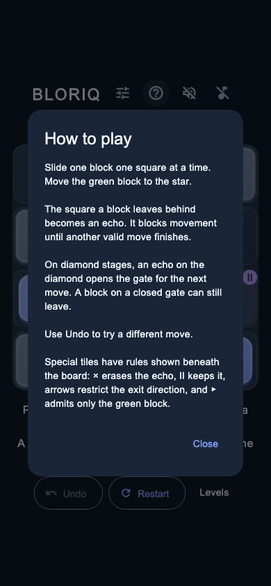
Dark재현 방법과 확인 범위: DESIGN_QA.md